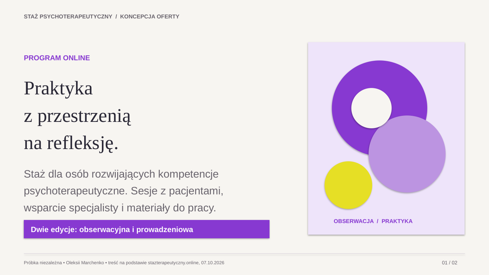
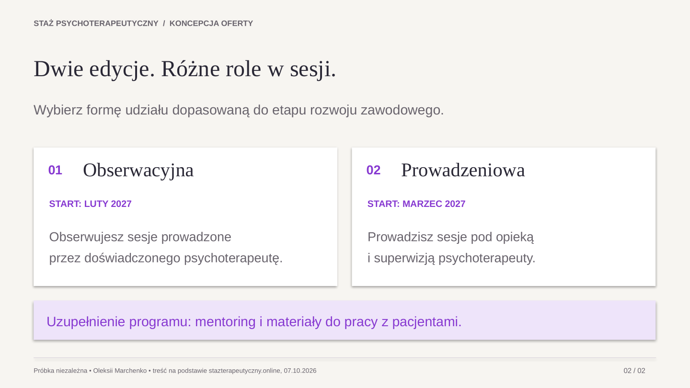

Oleksii Marchenko · Projekt prezentacji
Oferta, którą łatwo przeczytać i edytować.
Dwa slajdy demonstracyjne przygotowane do ogłoszenia Useme 145501. To niezależna propozycja kierunku wizualnego, nie oficjalny materiał organizatora ani realizacja dla dotychczasowego klienta.

01 — Wprowadzenie do oferty.
02 — Porównanie dwóch form udziału.Teksty, kształty i kolory pozostają edytowalne w pliku PowerPoint. PDF przygotowano z tego samego pliku.